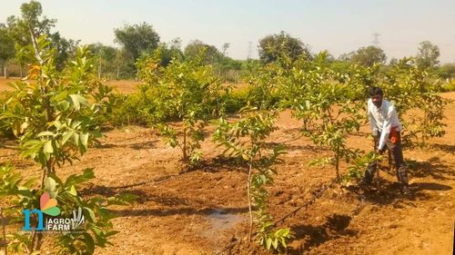

Importance of Planting Trees
Trees.
We don’t think about them regularly, but they are the unsung heroes behind our breathable air. Nowadays, when we see the news about the changing climate on the news, we immediately blame deforestation. The sole solution to this pressing issue is—reforestation.
But, you might ask why trees are important. What do they give us besides oxygen? To answer such questions and to underscore the importance of planting trees, we have curated a list showcasing the importance of planting trees and reforestation. Let’s get started.
Importance of Plants and Trees
Trees actively contribute to our well-being in several ways. Here are the key benefits of reforestation:
1. Carbon Sequestration
Trees are the masters of absorbing carbon dioxide (CO2) via photosynthesis; therefore, forests are known as carbon sinks. If we plant more trees and restore our leftover forests, we can sequester carbon and decrease greenhouse gas emissions. A single mature tree has an incredible capacity to absorb 21 kilograms of CO2 in a year. Imagine what a forest reforestation project spanning thousands of acres can do in one year. It can collectively sequester millions of tonnes of carbon in a year. This can contribute significantly to the pressing climate change situation. This underscores the importance of plants in our lives.
2. Biodiversity Conservation
Biodiversity is crucial for life on Earth, and forests are lively homes for many plants and animals. Every day, people use at least 40,000 different species of plants and animals for food, shelter, clothing, and medicine. Reforestation, or planting new trees, is important for protecting and bringing back this variety of life. By planting different kinds of trees, we create homes for various plants, insects, birds, and mammals, helping to keep the ecosystem balanced and healthy. Scientists have found that one tree can support up to 2.3 million living species!
When we reforest areas, they become safe places for endangered species and help save areas rich in biodiversity. Restoring these natural homes allows wildlife to recover and flourish. The connections between different species in the ecosystem ensure that a wide range of plants and animals can survive for a long time.
3. Soil Protection and Restoration
Soil is the bedrock (no pun intended) of thriving ecosystems and sustainable agriculture. Trees help protect this ecosystem and recover the diminishing soil health by stopping soil erosion and enhancing its structure. Trees shed their leaves and other organic matter regularly, which enriches the soil with essential nutrients supporting plant growth and fertility. Other than that, a dense forest with a canopy safeguards the ground from harsh weather.
4. Water Quality Enhancement
Forests work like natural water filters, cleaning water as it flows through them. By planting trees near rivers and lakes and restoring forest areas around water sources, we can make the water much cleaner. Trees help trap dirt, extra nutrients, and pollutants, stopping them from getting into our rivers, lakes, and underground water.
When we reduce the pollutants that enter our water, it makes the water better for fish and other aquatic life, and it protects the variety of species living there. Clean water is crucial not only for animals in the water but also for people to drink and for many economic activities.
5. Water Cycle Regulation
Trees play a crucial role in regulating water flow and the water cycle. Almost 75 percent of freshwater for domestic, agricultural, environmental, and industrial use comes from forest ecosystems. Additionally, 85 percent of the cities in the world get their fresh water supply due to forests. Therefore, forests stand as the pillars of water security. Moreover, trees are also responsible for maintaining groundwater levels. A strategic approach to reforestation can help replenish and recharge groundwater. This can help in a steady supply of water through dry periods, water scarcity, and droughts.
6. Climate Regulation
Forests are great at controlling the climate in both local and regional areas. Trees provide shade that cools down cities, and they release water vapor into the air, which also helps to lower temperatures.
When we plant trees in urban areas, they act like natural air conditioners. This helps reduce the "urban heat island" effect, where cities get much hotter than the countryside. Trees can lower the risk of heat-related problems and even save lives during heatwaves. From 1998 to 2017, more than 166,000 people died from heatwaves, and this problem is getting worse because of climate change.
By planting trees in cities, we can create cooler areas that give people relief from the heat and help cities cope better with climate change.
7. Air Quality Improvement
Improvement in the air quality is the most talked about benefit of planting trees. Trees are like natural air purifiers and they absorb harmful pollutants such as sulfur dioxide, nitrogen dioxide, particulate matter, and ozone. More importantly, trees release oxygen, which is among the most important aspects of our well-being.
If we plant more trees it can help us combat respiratory illnesses such as Asthma. As per the World Health Organization (WHO), nine out of 10 people breathe contaminated and polluted air. As a result, there are millions of illnesses and deaths, which were otherwise preventable. Planting more trees in cities and near factories can make neighborhoods healthier and cleaner for everyone who lives there.
8. Disaster Risk Reduction
Natural disasters like landslides, mudslides, and floods are big threats to communities. Planting more trees, especially in vulnerable areas, can help a lot. Trees hold the soil in place, which stops it from washing away during heavy rains and reduces the risk of landslides and mudslides.
Also, trees act as natural barriers, soaking up extra rainwater and making floods less severe. Their roots keep the soil strong, which helps prevent erosion when it rains a lot. Planting trees helps communities become stronger and better prepared for natural disasters. The importance of planting trees cannot be overstated.
9. Social and Cultural Benefits
Forests are very important for culture and society. They give us places to have fun, learn, and do research. Planting trees helps people reconnect with nature and feel proud of their environment. When local communities get involved in planting trees, it brings people together, promotes care for the environment, and helps us build a sustainable future.
Forests provide places for hiking, camping, and exploring, which are great for our physical and mental health. They also offer chances for schools and scientists to study nature, different species, and the effects of climate change. When communities take part in reforestation, they help protect the environment and feel more connected to their natural surroundings.
Economic Importance of Plants
Plants and trees are not just important for our environment and surroundings, they are also like the engine driving the economy. Here’s why they are important:
Agriculture and Food Production
Forestry and Wood Products
Medicinal and Pharmaceutical Products
Economic Livelihoods
Industrial Uses
Plants and trees are incredibly important for our lives and economies. The economic importance of plants cannot be overstated.
Final Thoughts - Importance of Planting Trees
As we’ve learned from this guide, trees, and forests are extremely important for the survival of human beings, animals, and the planet altogether. They provide fresh air, food, and water crucial for the sustenance of all the species living on the planet. Numerous reforestation projects are underway around the globe, which will help us in the long run. Therefore, we and future generations must learn about the importance of planting trees for a better future.
FAQs
1. Why planting trees are important for us?
Planting trees is very important for us because they give us clean air to breathe, produce food, and help manage water by reducing floods and droughts. Trees also cool down our surroundings, provide homes for wildlife, and keep the soil in place. They make our neighborhoods nicer, improve our mental and physical health, and create jobs. Overall, trees help make the world a healthier and better place for us and future generations.
2. What is the importance of plants and trees in our lives?
Trees help us fulfill our daily requirements such as air, food, medicine, shelter, wood, and many other products that benefit us. Plants are known as the primary producers and all living organisms rely on plants and trees.